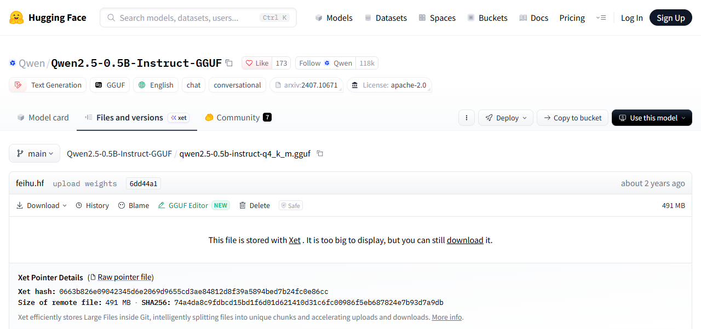

15:35–16:25 · 연결 실습
CPU에서 로컬 모델 실행하기
‘접수 문서 3건, 검토 대기 5건’을 내 PC에서 한 문장으로 만들려면 무엇을 받아야 할까요? 문장을 만드는 데 쓰는 모델 파일 하나와, 그 파일을 읽어 계산하는 프로그램 하나를 준비합니다.
실습 모델과 실행기
Qwen2.5 0.5B Instruct는 지시와 원문을 주면 문장을 생성하도록 학습된 언어 모델입니다. 파일에 들어 있는 가중치는 모델이 학습 과정에서 조정한 숫자입니다. GGUF는 그 숫자와 실행에 필요한 정보를 함께 담는 파일 형식입니다.
llama.cpp는 이 파일을 읽어 계산하는 실행기입니다. 실습에서는 내 PC의 중앙처리장치인 CPU가 계산합니다. 지시와 원문을 넣으면 실행기가 텍스트를 작은 단위인 토큰으로 바꾸고, 모델을 이용해 다음 토큰을 하나씩 골라 문장을 이어갑니다. 이미 학습한 모델로 새 답을 만드는 이 과정이 추론입니다.
실습용 Q4_K_M 파일은 가중치를 적은 비트로 표현해 용량을 줄인 판본으로 약 491 MB입니다. 이용 조건은 Apache 2.0이며, 실행 중에는 모델 파일을 보관할 디스크 공간 외에 계산용 메모리도 필요합니다.
수업 전에 파일 두 개를 받습니다
- Hugging Face에서 실습용 GGUF를 찾습니다. Hugging Face는 모델 제작자가 파일과 설명서를 공개하는 곳입니다. Qwen 공식 저장소의 Files and versions에서
qwen2.5-0.5b-instruct-q4_k_m.gguf를 엽니다. 같은 모델에도 가중치 표현 방식에 따라 여러 파일이 있으므로 이름과 크기를 함께 확인합니다.
Qwen 공식 저장소의 실제 파일 목록입니다. 실습에 쓰는 줄은 q4_k_m.gguf · 491 MB입니다. 이미지를 누르면 확대됩니다. - 선택한 파일을 받습니다. 파일 상세 화면에서 Download → Download file을 누릅니다. 다운로드가 끝난 뒤 확장자가
.gguf인지 확인합니다.
실제 파일 상세 화면입니다. 위쪽 경로에서 파일명을 보고, 메뉴에서 Download file · 491 MB를 선택합니다. - Windows용 llama.cpp CPU ZIP을 받습니다. Windows의 설정 → 시스템 → 정보에서 시스템 종류를 확인하고 해당 실행기를 받습니다.

llama.cpp b12387 릴리스의 실제 Windows 목록입니다. PC 시스템 종류에 맞게 Windows x64 (CPU) 또는 Windows arm64 (CPU)를 받습니다. - 실행기 ZIP을 풀고
llama-server.exe가 있는 폴더에 모델 파일을 넣습니다.

CPU에서 모델 서버를 시작합니다
파일을 내려받으면 모델이 디스크에 저장됩니다. 아래 명령으로 llama-server.exe를 실행하면 모델이 메모리에 올라가고, 프로그램이 요청을 기다리기 시작합니다. 이렇게 요청을 받아 처리하는 프로그램을 서버라고 부릅니다.
- 탐색기에서 모델과 실행기가 있는 폴더를 열고 주소 표시줄에
powershell을 입력합니다. - 파일 두 개가 모두 있는지 확인한 뒤 서버를 실행합니다. 첫 두 줄은 각각
True를 출력해야 합니다.Test-Path .\llama-server.exe Test-Path .\qwen2.5-0.5b-instruct-q4_k_m.gguf .\llama-server.exe -m .\qwen2.5-0.5b-instruct-q4_k_m.gguf --host 127.0.0.1 --port 8081 -ngl 0 -c 2048 -t 4-m뒤에는 읽을 모델 파일 이름이 옵니다.-ngl 0은 모델의 계산 층을 GPU에 배치하는 수를 0으로,-c 2048은 한 요청에서 다룰 문맥의 최대 길이를 2,048토큰으로,-t 4는 계산에 쓸 CPU 스레드 수를 4로 정합니다. - 서버 창을 열어둔 채 http://127.0.0.1:8081/를 엽니다.
127.0.0.1은 내 PC를 가리킵니다. 종료할 때는 서버를 켠 PowerShell에서 Ctrl+C를 누릅니다.
프로그램에서 내 입력을 모델로 보냅니다
연결 실습 폴더의 input.txt에 실습 원문을 저장합니다. 두 서버가 같은 PC에 있어서 요청을 받을 프로그램을 구별하는 번호인 포트를 다르게 씁니다. 8766번 입력 서버는 원문을 읽고, 8081번 모델 서버는 지시와 원문을 받아 문장을 생성합니다. 두 창을 켜 둔 상태에서 실습 폴더에서 실행합니다.
py -3.12 run_cpu.py입력 상태 · ok가 보이면 어떤 결과를 만들지 입력합니다. Enter만 누르면 한 문장 요약을 요청합니다. run_cpu.py는 입력 API가 돌려준 text에 지시를 붙여 POST /v1/chat/completions로 보냅니다. 모델이 작성한 문장은 응답의 choices[0].message.content에 들어 있습니다.
모델 응답을 원문과 대조합니다
- 연결이 성공했다면 응답에 필요한 정보와 형식이 있는지 봅니다. 모델이 추가한 문장은 원문에 근거가 있는지 확인합니다.
- 입력을 바꿔
run_cpu.py를 다시 실행합니다. 결과가 새 입력을 반영하는지 확인합니다. - 8766번 포트 연결 오류는 API 서버를 확인합니다. 8081번 포트 오류나 HTTP 503은 CPU 서버 창에서 모델 로딩과 주소를 확인합니다.
이번에는 원문이나 지시를 바꿀 때마다 이미 받은 모델로 새 답을 계산했습니다. 추가 학습은 예시 데이터를 반복해서 보여주며 모델의 가중치나 학습용 보조 가중치를 조정하는 과정입니다. 원문과 검토 기준이 모델까지 가는 과정
모델 정보와 공식 문서
- 모델과 파일 · Qwen2.5 0.5B Instruct 모델 카드 · GGUF 파일 형식
- 실행 및 호출 · llama.cpp b12387 배포 파일 · llama.cpp 서버와 HTTP 호출